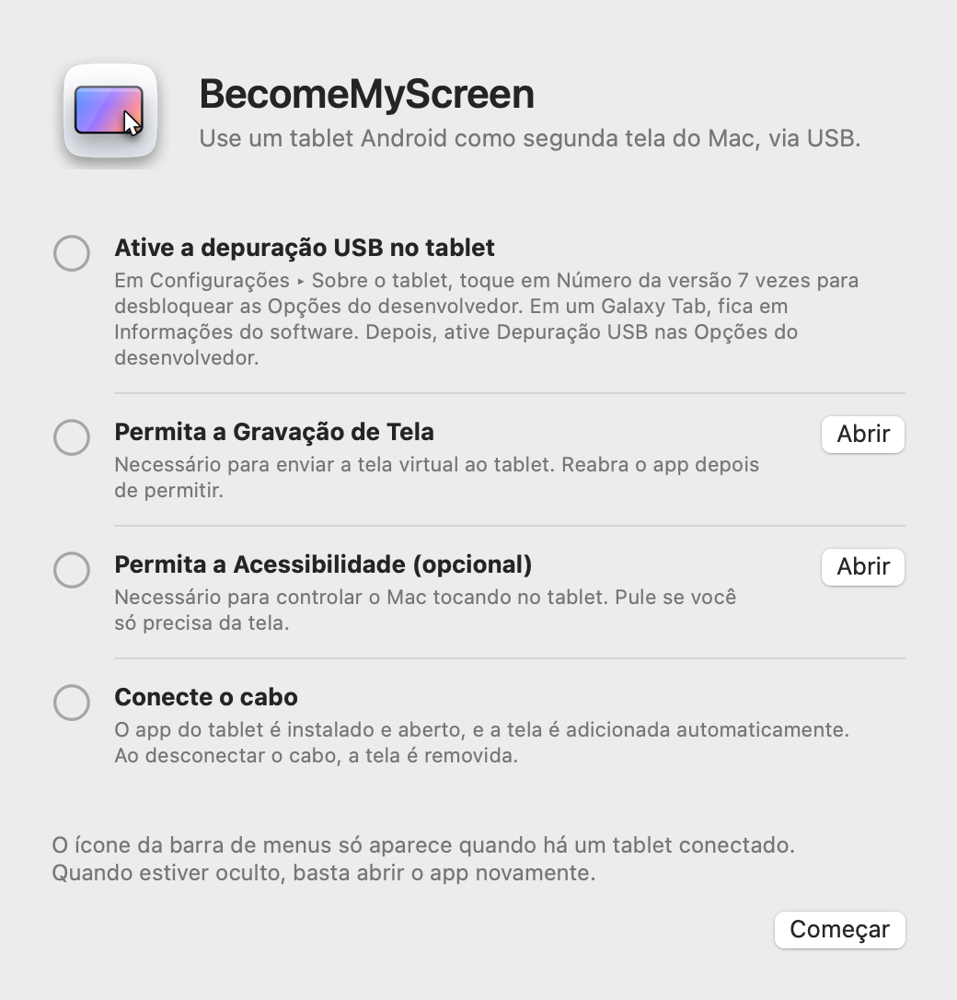
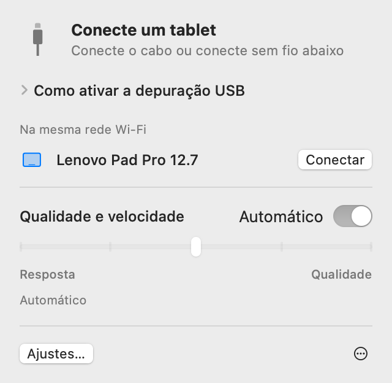
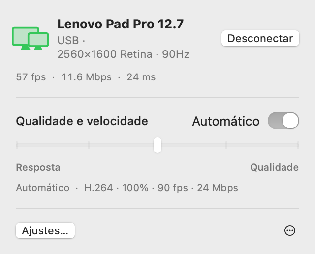
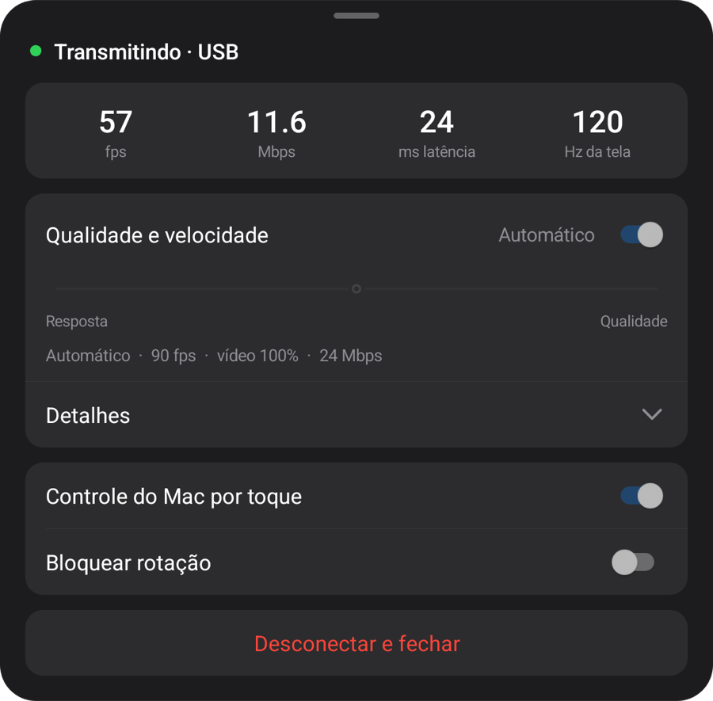
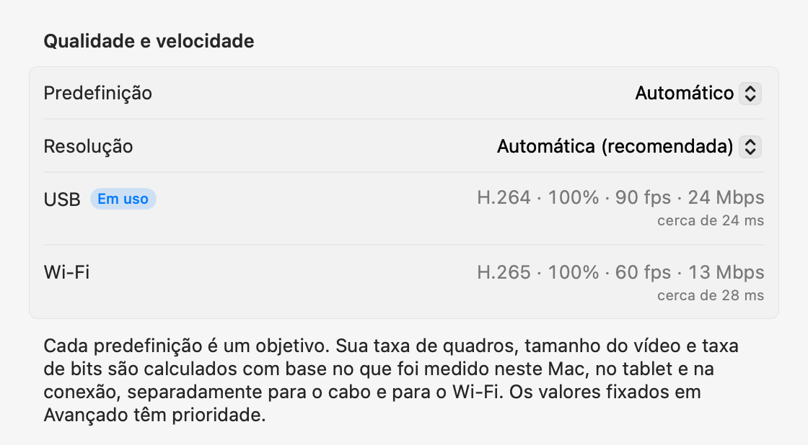

Seu tablet Android
como segunda tela do Mac.
Conecte um cabo USB e o tablet vira uma tela para o seu Mac. Desconecte e a tela continua na mesma rede Wi‑Fi. O app do Mac instala e abre o app do tablet, e não é preciso criar conta.
Abra o zip, mova o app para a pasta Aplicativos e abra-o. Para a primeira conexão, consulte Configuração.
Este app é para Mac. Abra esta página em um Mac para baixá-lo.

Configuração
Você só configura uma vez. Depois disso, conectar o cabo adiciona a tela e, na mesma rede Wi‑Fi, a conexão é feita sem cabo.
-
Instale o app do Mac
Abra o zip baixado, mova o BecomeMyScreen para a pasta Aplicativos e abra-o. Permita a Gravação de Tela e abra o app mais uma vez.
-
Ative a depuração USB no tablet
Em Configurações › Sobre o tablet, toque em Número da versão sete vezes para desbloquear as Opções do desenvolvedor. Em um Galaxy Tab, fica em Informações do software. Depois, ative Depuração USB nas Opções do desenvolvedor.
-
Conecte o cabo
Quando o tablet perguntar se você quer permitir a depuração USB, marque “Sempre permitir a partir deste computador” e toque em Permitir. O Mac instala e abre o app do tablet e, em seguida, adiciona a tela. Não é preciso baixar um app separado para o tablet.

Velocidade
O tempo entre o momento em que o Mac captura a tela e o momento em que o tablet a desenha. Medido com um Lenovo Pad Pro 12.7 e um Mac com M4 Pro.
| Tamanho do vídeo | 60 fps | 120 fps |
|---|---|---|
| 100%2560×1600 | 20 ms | 24 ms |
| 75%1920×1200 | 14 ms | 19 ms |
| 50%1280×800 | 11 ms | 16 ms |
O codificador de hardware do Apple Silicon comprime a tela em H.264 e a envia via USB, e o decodificador de hardware do tablet desenha cada quadro assim que ele chega. Na primeira conexão, o Automático mede quanto o decodificador consegue processar e escolhe a maior taxa de quadros que não fica para trás. Neste tablet, ele escolheu 90 fps.
Como foi medido: depois de corrigir a diferença entre os relógios dos dois dispositivos, medimos o tempo entre o Mac capturar um quadro e o tablet desenhar esse mesmo quadro.
Sem fio
Um tablet que já foi conectado uma vez via USB também funciona sem fio na mesma rede Wi‑Fi. Desconecte o cabo enquanto trabalha e a tela continua pelo Wi‑Fi.
- Conexão
- Abra o app no tablet e ele aparece na lista “Na mesma rede Wi‑Fi” da barra de menus do Mac. Clique em Conectar e a tela aparece.
- Desconexão do cabo
- Muda para o Wi‑Fi em menos de um segundo. A tela virtual e a disposição das janelas continuam como estão, e reconectar o cabo volta para o USB.
- Segurança
- A chave das conexões sem fio só é trocada pelo cabo USB. A conexão só é feita depois que a chave é verificada, e a tela e a entrada são totalmente criptografadas com AES-256-GCM.
- Ritmo adaptativo
- O tablet confirma cada quadro que recebe, e o Mac pula tantos quadros quanto estiver atrasado e ajusta a taxa de bits. Mesmo quando o Wi‑Fi fica lento por um momento, o atraso não se acumula.

| Conexão | Latência | Observações |
|---|---|---|
| USB | Cerca de 20–25 ms | A taxa de quadros máxima do tablet |
| Wi‑Fi 5 GHz | 40–55 ms | 60 fps; a taxa de bits aumenta automaticamente até o ajuste de qualidade |
| Wi‑Fi 2.4 GHz | 40–65 ms | A latência às vezes passa de 100 ms, o que pode parecer travamento |
Medido com um Lenovo Pad Pro 12.7 a 2560×1600 com conteúdo mudando constantemente. Se o tablet estiver em Wi‑Fi de 2,4 GHz, o app sugere mudar para 5 GHz.
Qualidade e resposta
Escolha um de cinco níveis ou deixe no Automático. Altere pela barra de menus do Mac ou pelo menu do tablet, e os dois lados mudam juntos.
| Predefinição | Taxa de quadros | Tamanho do vídeo | Taxa de bits |
|---|---|---|---|
| Automático | 90 fps | 100% | 24 Mbps |
| 1Resposta mais rápida | 120 fps | 50% | 8 Mbps |
| 2Resposta rápida | 120 fps | 75% | 14 Mbps |
| 3Equilibrado | 90 fps | 100% | 24 Mbps |
| 4Alta qualidade | 90 fps | 100% | 33 Mbps |
| 5Qualidade máxima | 60 fps | 100% | 39 Mbps |
Medido com um Lenovo Pad Pro 12.7 (2560×1600, 120 Hz) conectado via USB a um Mac com M4 Pro. Cada predefinição é um objetivo: em outro Mac ou tablet, e pelo Wi‑Fi, ela calcula seus próprios valores com base no que foi medido. O Automático equivale ao Equilibrado.
O tamanho do vídeo é definido separadamente da resolução que o Mac vê. Um vídeo menor ainda preenche a tela do tablet, e reduz a carga do decodificador e a latência na mesma proporção.
Na primeira conexão, o app mede o cabo, o codificador de vídeo deste Mac e o decodificador do tablet em cada um de seus modos, em cerca de 10 segundos; na primeira conexão pelo Wi‑Fi, mede a rede. Cada predefinição se adapta a esses números, separadamente para o cabo e para o Wi‑Fi, e na aba Avançado dos Ajustes você pode fixar qualquer valor para cada conexão. Se o cabo for lento, você é avisado para trocá-lo.



Toque
Toque no tablet e o Mac recebe isso como entrada de mouse. Funciona assim que você permite a Acessibilidade no Mac.
| No tablet | No Mac |
|---|---|
| Tocar | Clique |
| Arrastar | Arrastar |
| Arrastar com dois dedos | Rolar |
| Tocar com dois dedos | Clique secundário |
| Tocar com três dedos | Abre o menu do tablet |
| Desenhar com uma caneta | Chega ao Mac como entrada de mesa digitalizadora, com pressão e inclinação |
| Passar uma caneta ou o mouse sobre a tela | Move o ponteiro. Toque segurando o botão da caneta para fazer um clique secundário |
Um ponteiro que volta para onde estava
Quando você toca no tablet, o ponteiro do Mac vai para esse ponto. Mova um pouco o mouse depois e o ponteiro volta para onde estava antes do toque, então você não precisa arrastá-lo de volta para o que estava fazendo na tela principal. Você pode desativar isso nos Ajustes.
Detalhes
- Ícone da barra de menus
-
Só aparece quando há um tablet conectado. Quando estiver oculto, abra o app novamente e ele aparece por um momento com o painel aberto.
- Aguardando
- Preparando
- Em uso
- Requer atenção
- Abertura do app do tablet
- Se o app do tablet não estiver aberto quando você conectar o cabo, o Mac o abre e ativa a tela se estiver desligada. Ele nunca ignora a tela de bloqueio.
- Atualizações
- O app para Mac procura novas versões e se atualiza quando você quiser. Se ele trouxer um app do tablet mais novo, o tablet é atualizado pelo cabo antes de a tela começar.
- Retrato
- Gire o tablet para o modo retrato e a tela virtual também é recriada em retrato.
- Taxa de atualização e desligamento da tela
- Durante a transmissão, a taxa de atualização do tablet é mantida para não cair para 60 Hz, e a tela não desliga.
- Verificação do cabo
- Se o USB conectar a menos de 480 Mbps, as transferências ficarem abaixo de 8 MB/s ou a conexão cair três vezes em três minutos, o app sugere tentar outro cabo ou porta.
- Quando a conexão cai
- Se o cabo sair, a tela continua pelo Wi‑Fi. Se não for possível continuar sem fio, a tela virtual é mantida por um tempo e, se o tablet se reconectar nesse período, a disposição das janelas continua como estava.
- Desconectar e Reconectar
- Clique em Desconectar na barra de menus e a tela do tablet fica em pausa, mesmo com o cabo conectado. Clique em Reconectar para continuar.
- O app do tablet fecha sozinho
- Quando não há nada conectado ao tablet, nem mesmo um carregador, o app do tablet fecha sozinho após 10 segundos. Se puder aguardar uma conexão sem fio, ele espera 2 minutos.
Requisitos
- Mac
- Mac com Apple Silicon e macOS 14 ou posterior
- Tablet
- Android 8.0 ou posterior, em um dispositivo em que a depuração USB possa ser ativada
- Cabo
- Um cabo USB compatível com transferência de dados. Cabos só de carga não conectam. Uma porta do próprio Mac é mais confiável que um hub.
- Sem fio
- O Mac e o tablet precisam estar na mesma rede Wi‑Fi; recomenda-se 5 GHz. A primeira conexão precisa ser via USB.
- Permissões do Mac
- Gravação de Tela. Também Acessibilidade para controlar o Mac por toque e Rede Local para usar sem fio.
Perguntas frequentes
Preciso instalar um app no tablet?
Não. O app do tablet vem dentro do app do Mac; assim, quando você conecta o cabo, o Mac o instala e abre. Quando você atualiza o app do Mac, o app do tablet é atualizado junto na próxima conexão.
Funciona pelo Wi‑Fi?
Sim. Depois de conectar uma vez via USB, ele passa a se conectar sem fio na mesma rede Wi‑Fi. Abra o app no tablet e clique em Conectar na barra de menus do Mac, ou simplesmente desconecte o cabo durante o uso. A latência é um pouco maior que via USB (40–55 ms em 5 GHz), e o Wi‑Fi de 2,4 GHz pode travar de vez em quando, por isso recomenda-se 5 GHz.
Por que a primeira conexão precisa ser via USB?
Porque a chave das conexões sem fio só é trocada pelo cabo. Assim, nenhum outro dispositivo na mesma rede Wi‑Fi pode se passar pelo seu tablet e se conectar ao seu Mac. O app do tablet também é instalado nesse momento.
A pressão da caneta funciona?
Sim. A pressão e a inclinação da caneta chegam ao macOS como entrada de mesa digitalizadora (pressão, inclinação e proximidade). Ele usa a entrada de caneta padrão do Android, então a S Pen e as canetas da Lenovo não precisam de SDK nem driver adicional. Testado com a caneta do Lenovo Pad Pro 12.7.
Com quais tablets funciona?
Qualquer tablet com Android 8.0 ou posterior em que a depuração USB possa ser ativada. O desenvolvimento e as medições foram feitos em um Lenovo Pad Pro 12.7 (2944×1840, 120 Hz); outros dispositivos ainda não foram testados diretamente. A resolução e a orientação da tela virtual seguem a tela do tablet no momento da conexão.
Por que não está na App Store?
A criação da tela virtual depende de um recurso privado do macOS, por isso o app não pode ser publicado na App Store. Em vez disso, ele é assinado com um certificado de desenvolvedor Apple e notarizado pela Apple, então abre logo depois de baixado.
Por que ele precisa de Gravação de Tela e Acessibilidade?
A Gravação de Tela captura a tela virtual para enviá-la ao tablet, a Acessibilidade transforma os toques e a caneta do tablet em entrada do Mac, e a Rede Local encontra tablets na mesma rede Wi‑Fi. A tela só trafega pelo cabo USB ou dentro da sua rede Wi‑Fi (criptografada na conexão sem fio) e nunca sai para a internet.
A conexão cai o tempo todo.
Tente outro cabo compatível com transferência de dados ou conecte diretamente a uma porta do Mac em vez de um hub. O app avisa antes quando o USB conecta devagar ou cai com frequência. Após uma queda breve, a tela virtual é mantida por 15 segundos e continua de onde parou.
E se o tablet estiver bloqueado?
O Mac ativa a tela e abre o app, mas nunca ignora o bloqueio. Desbloqueie com seu PIN ou padrão e a conexão é feita na hora.
Funciona em Macs com Intel?
A versão atual é somente para Macs com Apple Silicon.
Baixar
Este app é para Mac. Abra esta página em um Mac para baixá-lo.
Abra o zip, mova o app para a pasta Aplicativos e abra-o. Para a primeira conexão, consulte Configuração.